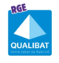

Couvreur · Charpentier · Zingueur
Votre toiture,
notre métier
depuis 1985
1 500+chantiers réalisés
4,9/529 avis Google
10 ansgarantie décennale
Ce que nous faisons
Couverturezinc, tuiles, ardoise
Rénovationréfection complète
Isolationcombles, rampants · RGE
Zingueriegouttières, raccords
Entretiennettoyage, démoussage
Maisons neuveset d'architecte
Visite et devis gratuits01 64 21 38 37
jmccouverture.com
Courtry (77) · Île-de-France
Comment ça se passe ?
4 étapes, un seul interlocuteur
Visite gratuitediagnostic sur place, photos à l'appui
Devis détaillégratuit, poste par poste
Chantier propresécurisé, suivi, accès au toit
PV de réceptioncontrôle qualité, puis SAV
Une équipe, depuis 1985
Couvreurs, charpentiers, zingueurs : toute l'équipe réunie pour les 40 ans de JMC.
Nous travaillons pour
Des garanties concrètes
Qualifications couverture

Éligible aux aides10 ansGarantie décennale
★★★★★4,9/529 avis Google
Où nous intervenons
Courtry · siègeSeine-et-Marne (77)Val-de-Marne (94)Seine-Saint-Denis (93)Val-d'Oise (95)Essonne (91)Hauts-de-Seine (92)Paris
SARL JMC · SIRET 380 660 779 00048 · RCS Meaux · Document non contractuel · Ne pas jeter sur la voie publique